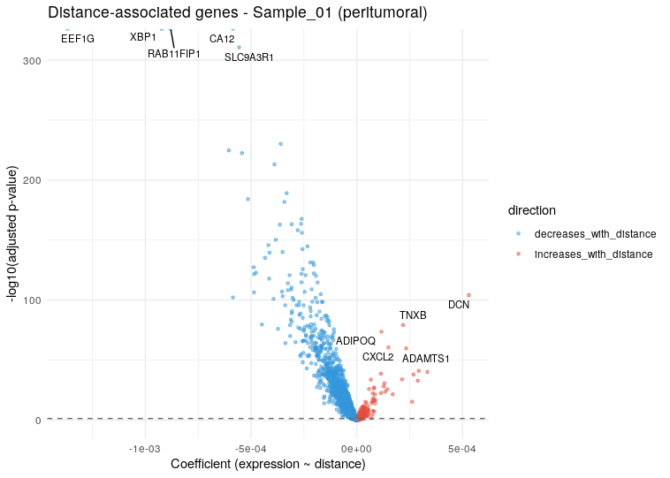
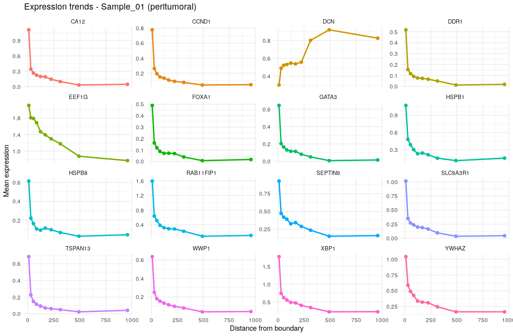
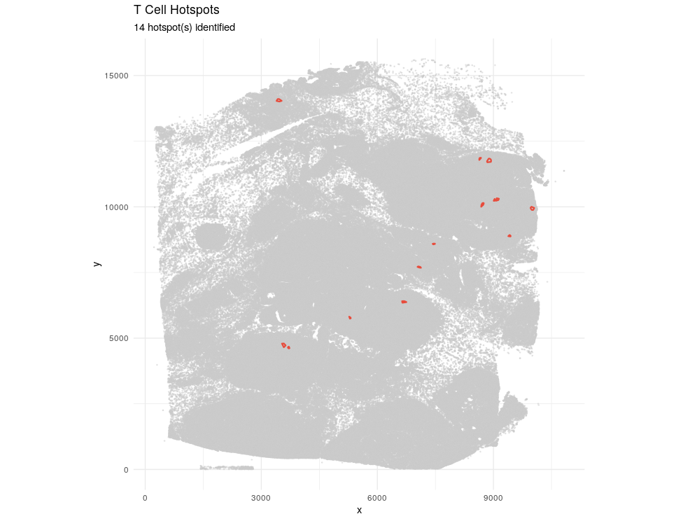

Gene-Distance Analysis
gene-distance-analysis.RmdIntroduction
stGradient provides tools to model individual gene expression as a function of distance from tumor boundaries or T-cell hotspots. This identifies genes whose expression systematically increases or decreases with distance from key spatial landmarks.
Boundary Distance-Gene Analysis
Step 1: Compute Signed Distance
First, compute a per-cell signed distance using a concave hull boundary:
library(stGradient)
seurat_obj <- compute_distance_from_boundary(
seurat_obj,
polygon_col = "inside_polygon",
intratumoral_label = TRUE,
fov_name = "fov",
concavity = 2
)This adds dist_to_boundary and
abs_dist_to_boundary metadata columns. Negative values
indicate intratumoral cells, positive values indicate
peritumoral/stromal cells.
Step 2: Find Distance-Associated Genes
Fit per-gene linear models and Spearman correlations:
dist_res <- find_distance_associated_genes(
seurat_obj,
assay = "Xenium",
focus = "peritumoral",
min_cells_expressing = 10,
n_distance_bins = 10,
max_dist_quantile = 0.95,
p_adj_threshold = 0.05
)Step 3: Visualize Results
dist_plots <- plot_distance_genes(dist_res, top_n = 12, sample_label = "Sample_01")
# Volcano plot of gene significance
dist_plots$volcano
# Expression trends for top genes across distance bins
dist_plots$trends

T-Cell Hotspot Distance-Gene Analysis
This workflow identifies genes whose expression changes with distance from intratumoral CD4/CD8 T-cell hotspots.
Step 1: Identify Hotspots
Use DBSCAN to detect spatial clusters of T cells within the tumor:
hs <- define_tcell_hotspots(
seurat_obj,
celltype_col = "singleR.predicted.id.brcaAtlas",
tcell_labels = c("T Cells CD4+", "T Cells CD8+"),
polygon_col = "inside_polygon",
intratumoral_label = TRUE,
eps = 50,
min_pts = 10,
min_hotspot_size = 5
)Step 2: Visualize Hotspots
plot_tcell_hotspots(seurat_obj, hs, celltype_col = "singleR.predicted.id.brcaAtlas")
Step 3: Model Gene Expression vs Hotspot Distance
hs_res <- find_hotspot_distance_genes(
seurat_obj,
hotspot_result = hs,
assay = "Xenium",
focus = "perihotspot",
min_cells_expressing = 10,
n_distance_bins = 10,
max_dist_quantile = 0.95,
p_adj_threshold = 0.05,
exclude_tcell_labels = c("T Cells CD4+", "T Cells CD8+")
)The exclude_tcell_labels parameter removes T cells
themselves from the analysis, focusing on how neighboring cells respond
to T-cell proximity.
Interpreting Results
Both analysis functions return a list containing:
-
results— Per-gene model summary with slopes, correlations, and adjusted p-values -
binned_expr— Mean expression per distance bin for trending genes -
metadata— Analysis parameters and cell counts
Genes with significant positive slopes increase in expression away from the boundary/hotspot, while negative slopes indicate enrichment near the landmark.
Next Steps
- Niche Analysis — intratumoral vs peritumoral niche identification and statistical testing
- Visualization — comprehensive plotting functions